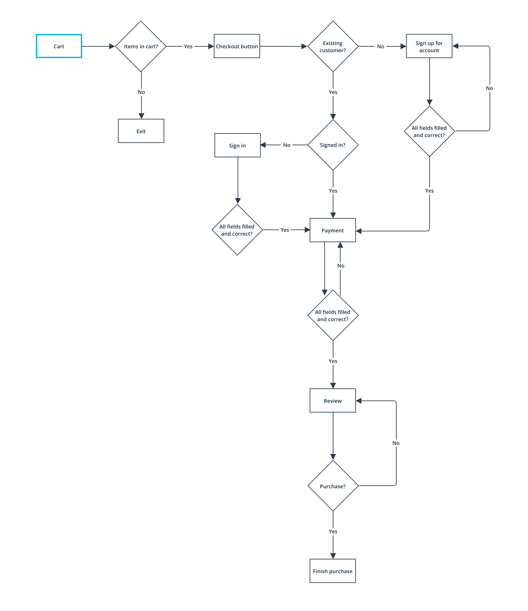

UX Design
Checkout Flow
As more users rely on their mobile device to access the web, it is important that Udacity's checkout flow provides customers with a simplified, convenient and secure experience. I redesigned part of Udacity's current checkout experience which inspired me to rethink the entire process to see if I could come up with a better solution that enhances the user experience on mobile devices.

My Role
- UX Designer
Timeline
- Aug. 2018
Tools
- Sketch, InVision
Skills
- User Research, User Flow, Wireframing
Introduction
Background
Udacity's mission is to democratize education through the offering of world-class higher education opportunities that are accessible, flexible, and economical. The main products are the online Nanodegree programs (ND), a project and skills-based educational credential program.
The checkout flow for Udacity is different than typical e-commerce sites because it is providing a service not a physical product. In addition, the price point of the services are much higher than typical e-commerce products and therefore users need more time to think about a purchase.
For this project, I was asked to redesign part of the checkout screen by adding a section that showed "bonus" items customers would receive when purchasing a ND. These items are comprehensive services such as resume reviews, one-on-one mentorship, project reviews, etc.
While finding a solution to that, I started to rethink the entire checkout flow and realized that there is no cart in the process. Instead, a user can only purchase one product at a time. I decided to work on this problem during my free time.
Problem
Since Udacity's programs have a high price point, it may be unlikely that a user will buy a product through their phone. However, on the off-chance that a user does purchase through mobile web, the checkout flow must be optimized for a great user experience. Otherwise, the company risks losing a potential customer.
How can I optimize our mobile checkout flow so that it is easy to understand and fast?
Pain Points
The current flow does not allow the user to purchase more than one item at a time. This may lead to decreased purchase rates if users want to buy multiple programs. Research shows that one of the top reasons for purchase abandonment is when users have to type in repetitive information (source: The Daily Egg).
Udacity's main advantage is that we offer services such as resume review, one-on-one mentorship, project reviews, and much more. All of these services are included in the pricing of a ND. Currently, when users checkout, they don't explicitly see that they are getting those items which may be useful when trying to convert a lead.
Research
Optimizing Mobile Checkout
After doing initial research, I read that it is important to stick to industry standards when designing a checkout flow. A sense of familiarity makes users feel more comfortable and secure when buying products. In this case, we want to make sure that users feel comfortable giving the website their personal information. If they do not feel secure, this could be one reason they end up abandoning the cart. In addition, since the shopping experience is over, we need to get customers to the end and have minimal opportunities for the user to walk away.
According to Shopify, the most important things to keep in mind when designing a checkout flow is the site being easy to understand, simple, and fast.
Studies show that in order to optimize the mobile checkout experience, it is best to breakup the process into sections such as using an "accordion" style so that the users can see how many steps they have left. This type of design can help eliminate anxiety in users if they see a long scroll.
An alternative to the "accordion" style is progress bars. This reassures and provides users of a time estimate of the process.
One way to speed up the process is to enable auto fill text boxes, auto skip, and auto check. It is also important to use big buttons since fingers aren’t as precise as pointers. Also, since the keyboard takes up half the screen on mobile devices, it is best to keep the text input to a minimum.
Current Checkout Analysis
The current mobile checkout is just one long scroll. There is no indication of how many “steps” the process is. Breaking it up into multiple steps may help ease anxiety of a long form. The current design is optimized to get the user to the checkout stage as quickly as possible. The user is taken directly to checkout when they hit the “Enroll Now” button on an Nanodegree overview page (NDOP). Customers are unable to checkout with more than one product. There are also some typographical problems with the current design such as in the Affirm module. The text is squished and not legible.
The current experience does do a good job in eliminating distractions by having no ads, images, etc. It is also very simple with only two steps — sign in/up and payment.

Competitive Analysis
I compared the checkout process for two competitors: Coursera and Udemy. They actually have similar flows to Udacity. Other competitors are online master degree programs at accredited universities or colleges. Those have an application process which is the main difference between Udacity and them. The mission at Udacity is to "democratize education" by making it accessible to anyone. In addition, our price point is 10 times less than a traditional degree.
For Coursera, when a user clicks "Enroll Now", it takes them to a pop up where they either log in or sign up for an account. It forces the user to make an account in order to access the lesson materials. It differs from Udacity because it goes by a monthly subscription plan. After signing in/up, it takes the user to the confirmation page with the course details, payment options underneath, and checkout button. The process is very simple, straightforward and fast. However, there is no cart option and therefore the customer can only purchase one course at a time.
Udemy utilizes a cart and therefore users can purchase multiple items. However, the cart has a lot of distractions including a section for "other courses you may like”. When the customer clicks “Checkout”, they are taken to a pop up where you either log in or sign up for an account (just like Coursera and Udacity). You are then taken to the cart details and payment options.

Coursera, Udemy and Udacity don’t use progress indicators in their checkout process but instead use long scrolls. All three processes are quick and simple with only two steps. Breaking these two steps down into separate pages can eliminate the need for a long scroll.
Coursera and Udemy do not provide “bonus” items (mentorship, portfolio review, career services, etc.) in their products. This is Udacity’s opportunity to show their advantage which should be reflected in the purchase screen.
Ideation
User Personas

User Flows
One of the main differences in my proposed flow is the addition of a cart. This enables a user to purchase multiple items at once which not only saves time but can reduce the frustration of typing in the same information multiple times.
Wireframes


Iterations
Bonus Items Explorations


I experimented with multiple layouts for the “bonus" items section. I first tried listing them right underneath the ND details but that made the Order Summary section too long.
I then tried putting them under the payment section, but realized that the logic/flow didn’t really make sense. The confirmation button would have been above it and I also thought it should be grouped with the Order Summary section since the items are related.
I went back to putting the items in a separate section under the Order Summary card, but the third layout seemed disconnected. If the user had a small browser, there was a possible chance of this section getting cut off. There would be no indication that the sections were connected or that the user should scroll.
I tried connecting the ND details and "bonus" items again but didn’t make a color block separation like my first idea. I explored more options and came up with my final option (below) which is implemented on the checkout site right now. On desktop, the bonus items are in the expanded view by default. However, on mobile, I created the default view as collapsed since the screen is smaller and didn't want to cause the user unnecessary scrolling if they didn't want to.
Payment Method Exploration

For this iteration, I explored a new payment selection design. Instead of having a traditional radio button selection, I created three buttons of the payment method themselves. When a button is selected, the corresponding payment forms will appear.
After receiving feedback, I decided that using the traditional radio button method is better. This is because when users are giving personal information, they want to feel a sense of security. Seeing a familiar layout and design provides security and therefore, people will trust it. In addition, the radio buttons provide a clearer indication that they are buttons to be selected. The new explorations interaction is not as obvious.
Account Sign In/Up Explorations
I iterated on the sign in and sign up screens to see if I could create a more continuous flow. I explored the use of a pop up log in module. However, this was distracting and took the user out of the main flow because they had to click the exit button to get out of the module. I decided to stick with the traditional method of loading a new page for either signing in or creating an account.
Progress Indicator Explorations

I explored the use of an "accordion" style and two types of progress bars to help guide the customer through the checkout process. This is lacking in the current design as the flow is just one long scroll.
My final iterations had the process as only two steps which showed that the "accordion" style was a bit excessive. The progress bar was much more visually friendly, took up less space, and was simple to understand.
Final Design
Final Prototype
My final iteration for the "bonus" items design included a dropdown option that could be expanded if the users wanted to see which items were included in their ND purchase. The addition of this section is important because those services are the ones that distinguish Udacity from their competitors. Showing them in the checkout is a good reminder to the user of why they are choosing Udacity.
My proposed cart checkout flow, uses a minimal progress bar indicator of two steps. This way users can feel at ease knowing the process will be quick and simple. In the cart, it gives them the option to remove items or to add a coupon code. However, during the "Review Order" page, I do not include those options since the user is at the end of the process and I don't want them to change their mind or leave the page to find a coupon code.
User Testing
I tested my final prototype on four users to see if the addition of a cart significantly slowed down the checkout speed. My hypothesis is that the checkout speed will be slower when checking out with one item because of the addition of the cart. It adds one step to the current flow. However, I believe it will speed up the checkout time if purchasing more than one item.
I tested four scenarios and calculated the average checkout time for each:
Test 1. Average speed of checkout with 1 item (current flow) - 1:12 min
Test 2. Average speed of checkout with 2 items (current flow) - 1:41 min
Test 3. Average speed of checkout with 1 item (proposed flow) - 1:15 min
Test 4. Average speed of checkout with 2 items (proposed flow) - 1:15 min
The checkout speed for purchasing one item versus more than one item in my proposed flow is the same. The added time for checkout with a cart (1:15 min) doesn't significantly slow down the current flow (1:12 min), which is only a 3 second delay.
Takeaways
Having a cart slows down the checkout time for a single item by 3 seconds. This is a small difference which shouldn't affect the users experience. However, when purchasing multiple items, it speeds up the process by 26 seconds. The slowdown for single item purchases may be worth it if testing is conducted on the site and shows that people do want to buy multiple items.
Next Steps
I would like to conduct user testing on the site with and without a cart to see whether or not people purchase more than one product at a time.
If the data shows people want to buy multiple items, then having a cart can drastically improve the checkout speed. If the results show that people only buy one product at a time, then we can be certain that we are already maximizing our flow.
I believe that testing is very important in order to inform the next steps on how to optimize the checkout process.